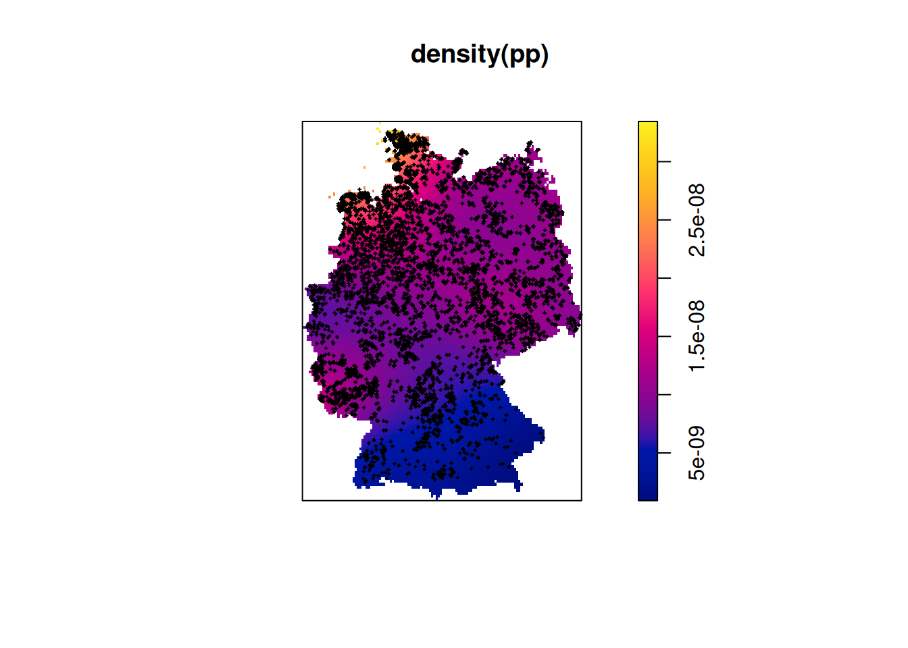
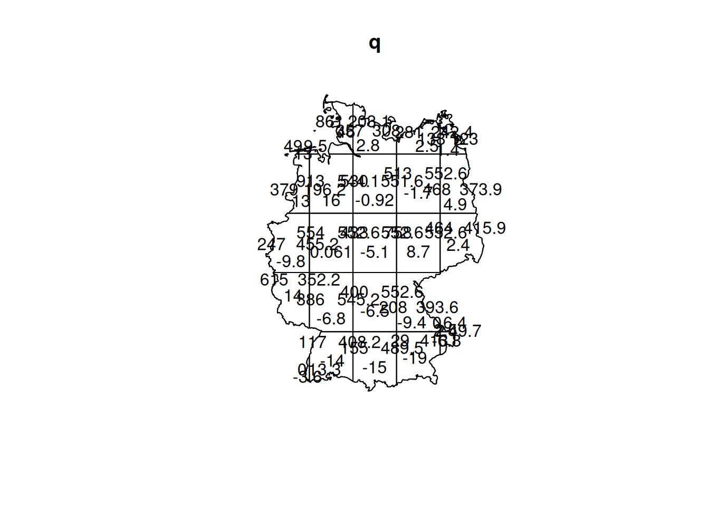
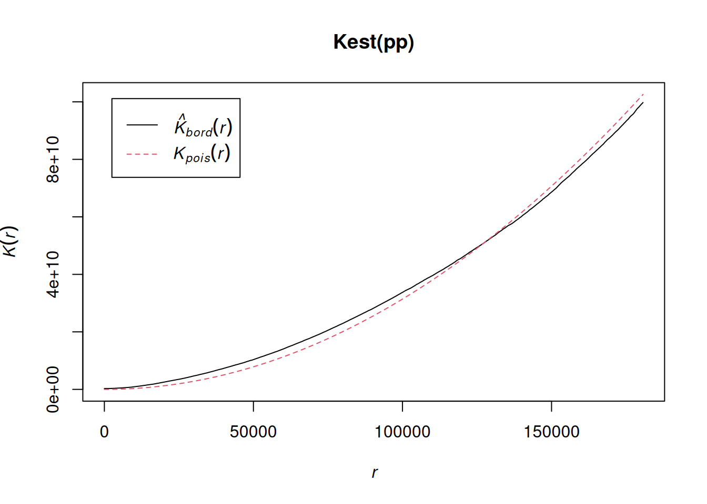
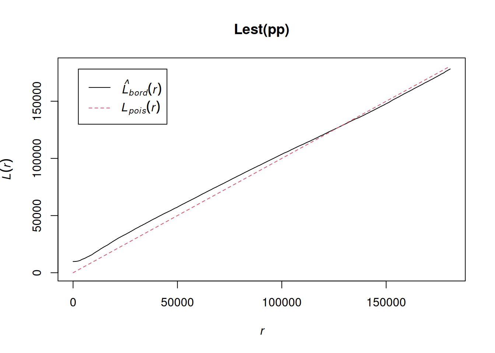
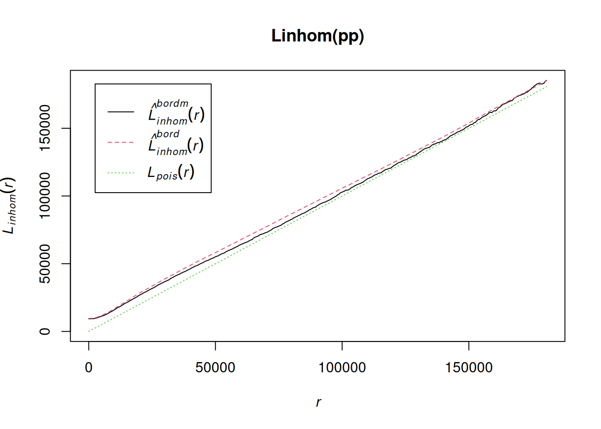

Compute the distance between POINT(10 -90) and POINT(50 -90), assuming (i) these are coordinates in a Cartesian space, and (ii) these are geodetic coordinates. What are the units of the result?
library(sf)
Linking to GEOS 3.12.1, GDAL 3.8.4, PROJ 9.4.0; sf_use_s2() is TRUE
Load the nc dataset into your session (e.g. using library(sf); demo(nc)) and convert it into a stars object using (i) st_as_stars(), (ii) st_rasterize(), (iii) st_interpolate_aw()
demo(nc, echo =FALSE, ask =FALSE)library(stars)
Loading required package: abind
(r1 <-st_as_stars(nc))
stars object with 1 dimensions and 14 attributes
attribute(s):
AREA PERIMETER CNTY_ CNTY_ID
Min. :0.0420 Min. :0.999 Min. :1825 Min. :1825
1st Qu.:0.0910 1st Qu.:1.324 1st Qu.:1902 1st Qu.:1902
Median :0.1205 Median :1.609 Median :1982 Median :1982
Mean :0.1263 Mean :1.673 Mean :1986 Mean :1986
3rd Qu.:0.1542 3rd Qu.:1.859 3rd Qu.:2067 3rd Qu.:2067
Max. :0.2410 Max. :3.640 Max. :2241 Max. :2241
NAME FIPS FIPSNO CRESS_ID
Length:100 Length:100 Min. :37001 Min. : 1.00
Class :character Class :character 1st Qu.:37050 1st Qu.: 25.75
Mode :character Mode :character Median :37100 Median : 50.50
Mean :37100 Mean : 50.50
3rd Qu.:37150 3rd Qu.: 75.25
Max. :37199 Max. :100.00
BIR74 SID74 NWBIR74 BIR79
Min. : 248 Min. : 0.00 Min. : 1.0 Min. : 319
1st Qu.: 1077 1st Qu.: 2.00 1st Qu.: 190.0 1st Qu.: 1336
Median : 2180 Median : 4.00 Median : 697.5 Median : 2636
Mean : 3300 Mean : 6.67 Mean :1050.8 Mean : 4224
3rd Qu.: 3936 3rd Qu.: 8.25 3rd Qu.:1168.5 3rd Qu.: 4889
Max. :21588 Max. :44.00 Max. :8027.0 Max. :30757
SID79 NWBIR79
Min. : 0.00 Min. : 3.0
1st Qu.: 2.00 1st Qu.: 250.5
Median : 5.00 Median : 874.5
Mean : 8.36 Mean : 1352.8
3rd Qu.:10.25 3rd Qu.: 1406.8
Max. :57.00 Max. :11631.0
dimension(s):
from to refsys point
geom 1 100 NAD27 FALSE
values
geom MULTIPOLYGON (((-81.47276...,...,MULTIPOLYGON (((-78.65572...
Load the L7_ETMs dataset into your session (e.g. using library(stars); L7_ETMs = st_as_stars(L7_ETMs)), and convert the object to an sf object (i) using st_as_sf(), (ii) using st_as_sf(..., as_points = TRUE), and explain the differences (also plot the resulting sf objects). Randomly sample 100 points from the bounding box of L7_ETMs, and extract the image values at these points using st_extract(), and convert the result into an sf object.
Simple feature collection with 100 features and 6 fields
Geometry type: POINT
Dimension: XY
Bounding box: xmin: 288793.4 ymin: 9110827 xmax: 298518.1 ymax: 9120736
Projected CRS: SIRGAS 2000 / UTM zone 25S
First 10 features:
L7_ETMs.V1 L7_ETMs.V2 L7_ETMs.V3 L7_ETMs.V4 L7_ETMs.V5 L7_ETMs.V6
1 76 65 62 68 89 59
2 67 58 51 93 83 42
3 71 59 51 91 81 45
4 68 53 52 70 81 59
5 85 79 84 94 128 93
6 84 73 87 57 101 89
7 70 66 55 79 97 55
8 79 68 70 86 94 59
9 84 69 72 54 96 80
10 93 84 72 16 15 13
geometry
1 POINT (290875.2 9112401)
2 POINT (294666.6 9116667)
3 POINT (296654.1 9116977)
4 POINT (296326.8 9120172)
5 POINT (294983.7 9119677)
6 POINT (297837.2 9118004)
7 POINT (293001.7 9113377)
8 POINT (296781.9 9119806)
9 POINT (295642.5 9115773)
10 POINT (297894.8 9115691)
(e2 <-st_intersection(s1, pts))
Warning: attribute variables are assumed to be spatially constant throughout
all geometries
Simple feature collection with 100 features and 6 fields
Geometry type: POINT
Dimension: XY
Bounding box: xmin: 288793.4 ymin: 9110827 xmax: 298518.1 ymax: 9120736
Projected CRS: SIRGAS 2000 / UTM zone 25S
First 10 features:
L7_ETMs.V1 L7_ETMs.V2 L7_ETMs.V3 L7_ETMs.V4 L7_ETMs.V5 L7_ETMs.V6
102331 76 65 62 68 89 59
50114 67 58 51 93 83 42
46345 71 59 51 91 81 45
7245 68 53 52 70 81 59
13480 85 79 84 94 128 93
33822 84 73 87 57 101 89
90540 70 66 55 79 97 55
11798 79 68 70 86 94 59
61316 84 69 72 54 96 80
62093 93 84 72 16 15 13
geometry
102331 POINT (290875.2 9112401)
50114 POINT (294666.6 9116667)
46345 POINT (296654.1 9116977)
7245 POINT (296326.8 9120172)
13480 POINT (294983.7 9119677)
33822 POINT (297837.2 9118004)
90540 POINT (293001.7 9113377)
11798 POINT (296781.9 9119806)
61316 POINT (295642.5 9115773)
62093 POINT (297894.8 9115691)
all.equal(e1, e2, check.attributes =FALSE)
[1] TRUE
(e3 <-st_intersection(s2, pts))
Warning: attribute variables are assumed to be spatially constant throughout
all geometries
Simple feature collection with 0 features and 6 fields
Bounding box: xmin: NA ymin: NA xmax: NA ymax: NA
Projected CRS: SIRGAS 2000 / UTM zone 25S
[1] L7_ETMs.V1 L7_ETMs.V2 L7_ETMs.V3 L7_ETMs.V4 L7_ETMs.V5 L7_ETMs.V6 geometry
<0 rows> (or 0-length row.names)
From the point pattern shown in section 1.3, download the GeoPackage, and read into R
Warning: 52 points were rejected as lying outside the specified window
Warning: data contain duplicated points
# or, with marks:pp <-as.ppp(w[g, ], W =as.owin(g))
Warning: data contain duplicated points
Create a density map of the wind turbines, with the turbines added
plot(density(pp))
Warning in seq.default(xrange[1L], xrange[2L], length = n + 1L): partial
argument match of 'length' to 'length.out'
plot(pp, add =TRUE, pch =3, cex = .2, col ='green')
Plotting the first column of marks
Warning in default.charmap(ntypes, chars): Too many types to display every type
as a different character

CSR?
(q =quadrat.test(pp))
Chi-squared test of CSR using quadrat counts
data: pp
X2 = 4193.1, df = 24, p-value < 2.2e-16
alternative hypothesis: two.sided
Quadrats: 25 tiles (irregular windows)
plot(q)

density:
d <-density(pp)# verify density:mean(d) *st_area(g) |> units::drop_units()
[1] 8644.653
nobjects(pp)
[1] 8857
interactions?
Kest(pp) |>plot()
number of data points exceeds 3000 - computing border correction estimate only

Lest(pp) |>plot()
number of data points exceeds 3000 - computing border correction estimate only

Linhom(pp) |>plot()
number of data points exceeds 1000 - computing border correction estimate only
Warning: Internal error: fvlabels truncated the function name
Warning: Internal error: fvlabels truncated the function name
Warning: Internal error: fvlabels truncated the function name
Warning: Internal error: fvlabels truncated the function name

These two take a rather long time: try it by yourself: